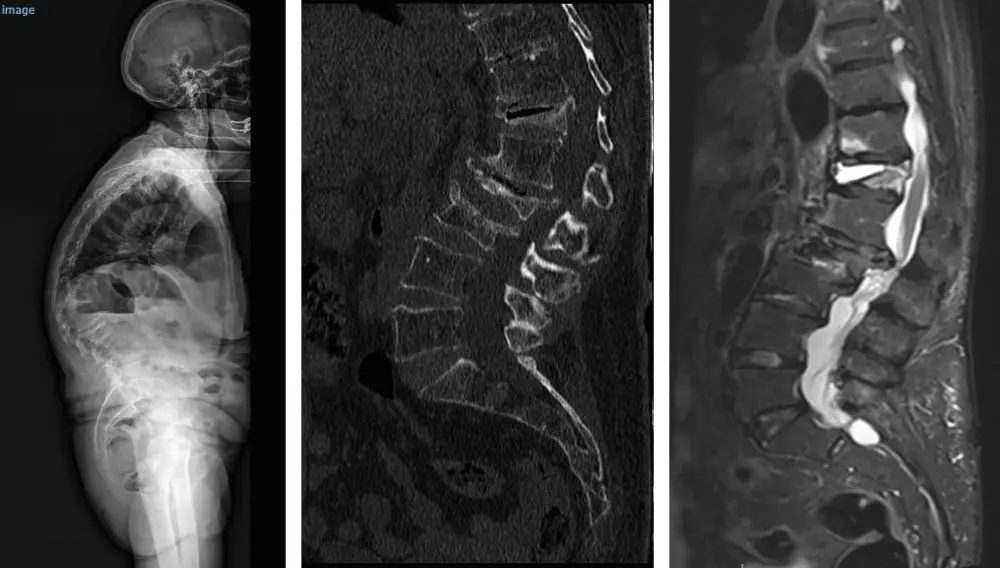

Prevención de Fracturas por Osteoporosis
Un procedimiento de vanguardia que refuerza el hueso desde adentro para prevenir la fractura de cadera, antes de que ocurra.
¿Qué es la osteoporosis?
La osteoporosis es una enfermedad que vuelve los huesos frágiles y más propensos a fracturarse. Aproximadamente la mitad de todas las mujeres mayores de 50 años sufrirá una fractura de cadera, muñeca o columna.
La causa principal es genética, pero factores como la falta de calcio, el tabaquismo y otras enfermedades aumentan el riesgo.
La fractura de cadera es especialmente seria en personas mayores, porque compromete la autonomía y la calidad de vida de forma prolongada. Por eso el enfoque más valioso es prevenirla antes de que suceda.
El procedimiento
En ViBa Clínica de Tratamiento del Dolor realizamos un procedimiento médico de vanguardia para prevenir las fracturas de cadera. Consiste en la introducción de un cemento especial de uso médico en la zona donde es más frecuente que ocurra la fractura, fortaleciendo el hueso desde adentro.
- Procedimiento seguro con un alto margen de éxito para reforzar la estructura ósea.
- Es guiado por Rayos X en tiempo real para asegurar una colocación precisa del cemento.
- No requiere anestesia general, lo que facilita y acelera la recuperación del paciente.

¿Quién puede beneficiarse?
Este procedimiento está dirigido principalmente a personas con diagnóstico de osteoporosis y riesgo elevado de fractura de cadera. La evaluación especializada, junto con tus estudios de densidad ósea, determina si eres candidato.
Si un familiar mayor tiene osteoporosis diagnosticada y te preocupa el riesgo de una caída, una consulta de valoración es el punto de partida.
Nota: esta información es educativa y no sustituye una consulta médica. Cada caso debe ser evaluado individualmente por un especialista.
¿Osteoporosis diagnosticada? Prevenir es mejor que tratar
Agenda una evaluación para conocer el riesgo real de fractura y las opciones de prevención disponibles.
Atendemos en Quetzaltenango (Xela) · Lunes a viernes 8:00–13:00 y 15:00–18:00 · Sábado 8:00–13:00